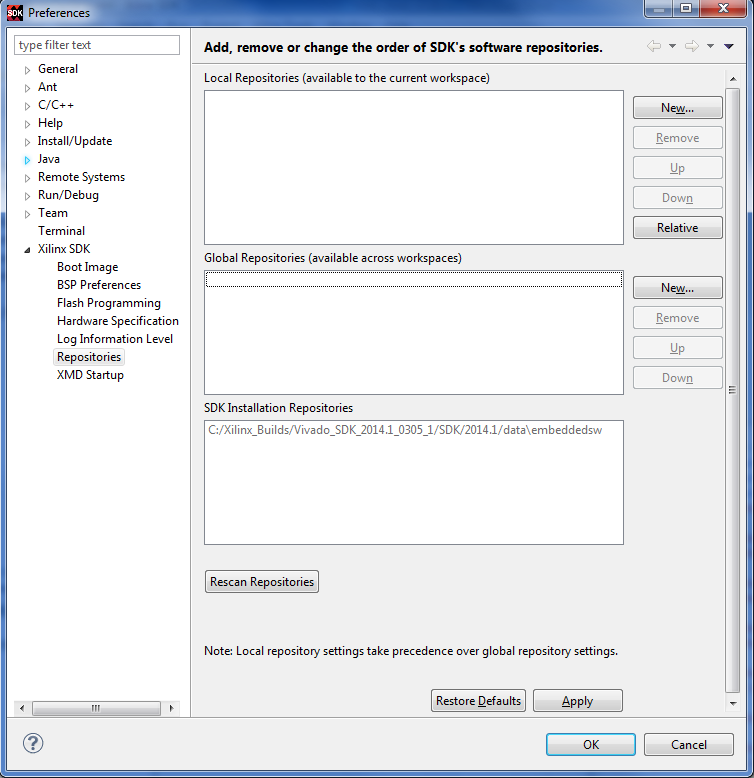

Select Xilinx Tools > Repositories to open the Software Repositories dialog box, in which you can specify your software repository location.

The following functions are available in the Software Repositories dialog box:
Name |
Function |
|---|---|
SDK Installation Repositories |
The location of the installed software repository. |
Global Repositories |
The location of the user-defined global software repository. These repositories are available across all SDK workspaces. |
Local Repositories |
The location of the user-defined local software repository. These repositories are available only to the current SDK workspace. |